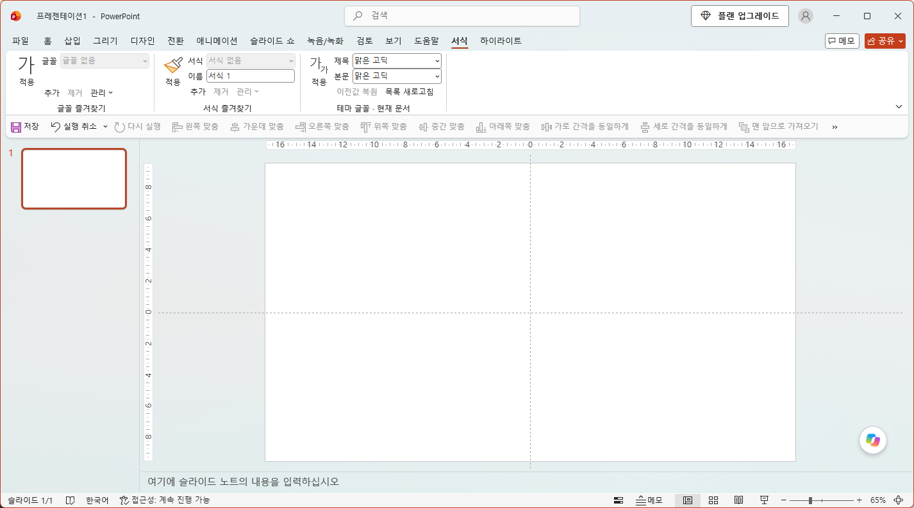

“아까 쓴 폰트가 뭐였지?”
PowerPoint를 새로 열고 최근 목록을 다시 찾는 대신, 자주 쓰는 글꼴을 내 목록으로 남겨두세요.
다시 열어도 남는 글꼴 즐겨찾기
다시 찾던 폰트도, 매번 복사하던 서식도.
나만의 목록에 저장하고
PowerPoint 안에서 바로 꺼내 쓰세요.
Windows · 64비트 데스크톱 PowerPoint용 · 설치 EXE 121 KB
필요한 글꼴만, 원하는 순서로.
반복 작업을 줄이는 방법
폰트 이름을 적어둔 슬라이드,
서식 복사용 텍스트 상자.
이제 따로 챙기지 않아도 됩니다.
PowerPoint를 새로 열고 최근 목록을 다시 찾는 대신, 자주 쓰는 글꼴을 내 목록으로 남겨두세요.
글꼴과 크기, 굵기, 글자색과 강조색을 한 번에 저장하세요. 원본 슬라이드로 돌아가 서식을 복사할 필요가 줄어듭니다.
현재 문서의 제목과 본문 글꼴을 확인하고 바꾸세요. 즐겨찾기와 전체 글꼴을 구분해 골라볼 수 있습니다.
실제 POWERPOINT 화면
설치하면 PowerPoint에 ‘서식’ 탭이 생깁니다.
글꼴·서식 즐겨찾기와 테마 글꼴을
한곳에서 사용할 수 있습니다.

글자를 선택하고 ‘추가’로 저장하세요. 목록에서 골라 바로 적용하고, ‘관리’에서 순서 변경·내보내기·가져오기를 할 수 있습니다.
글자를 선택하고 이름을 적어 ‘추가’하세요. 저장한 서식을 고르고 큰 ‘적용’ 버튼을 누르면 선택한 글자에 반영됩니다.
현재 테마의 제목·본문 글꼴을 확인하고 원하는 글꼴로 바꾸세요. 두 글꼴을 고른 뒤 ‘적용’을 눌러 문서에 반영합니다.
01 / 글꼴 즐겨찾기
목록에서 글꼴을 골라보세요. 실제 추가 기능에서는 선택한 글자에 바로 적용됩니다.
02 / 서식 즐겨찾기
서식을 고르고 ‘적용’을 눌러보세요. 실제로는 같은 서식의 글자를 선택해 이름을 입력하고 ‘추가’로 저장합니다.
03 / 테마 글꼴
현재 테마의 글꼴을 확인하고 원하는 조합을 적용하세요. 아래는 이해를 돕기 위한 예시 글꼴 목록입니다.
이 화면은 사용 흐름을 설명하는 웹 체험이며 실제 리본 화면과 다릅니다. PC에 없는 글꼴은 대체 글꼴로 표시될 수 있습니다. 웹 체험은 파일을 읽거나 PowerPoint 문서를 변경하지 않습니다.
글꼴 즐겨찾기의 순서를 바꾸고, 목록을 내보내거나 가져올 수 있습니다. 추가 기능이 폰트 파일을 제공하거나 설치하지는 않습니다.
글꼴, 크기, 굵게, 기울임, 밑줄, 글자색과 텍스트 강조색을 저장합니다. 문단 설정이나 도형 전체의 서식을 복제하는 기능은 아닙니다.
제목·본문 테마 글꼴을 바꿉니다. 글꼴을 직접 지정한 텍스트는 그대로일 수 있으며, 모든 텍스트를 일괄 치환하는 기능과는 다릅니다.
설치와 시작
Windows 64비트 데스크톱 PowerPoint용.
EXE 파일 하나로 설치하고
PowerPoint 안에서 사용합니다.
열려 있는 문서를 저장하고 PowerPoint를 완전히 종료하세요. 이전 PPT Font Bookmark를 사용했다면 목록을 내보내 백업하고, 목록 보존 옵션으로 기존 버전을 제거한 뒤 설치하세요.
설치 파일을 실행하고 위치와 안내를 확인해 설치합니다. 현재 Windows 사용자에게 설치되며 관리자 권한을 요청하지 않습니다.
PowerPoint를 다시 열고 새 문서의 ‘서식’ 탭을 확인하세요. 글자를 선택해 글꼴·서식을 저장하거나 현재 문서의 테마 글꼴을 설정합니다.
PPT STYLE
v1.3.15 · Windows 64비트 PowerPoint용
설치 파일 123,904 bytes · 약 121 KB
설치 전 PowerPoint를 완전히 종료해주세요.
Windows 설정 → 앱 → 설치된 앱 → PPT Style → 제거
Windows용 64비트 Microsoft 365 데스크톱 PowerPoint에서 개발·검증했습니다. v1.3.15는 실제 교체 설치와 서식 즐겨찾기의 강조색 저장·적용·제거를 확인했습니다. Mac, 웹 PowerPoint, 32비트 PowerPoint에서는 사용할 수 없습니다. 다른 Office 버전과 PC 조합은 별도 확인이 필요합니다.
디지털 서명이 없는 설치 파일로, 브라우저 또는 Windows에서 게시자를 확인할 수 없다는 안내가 나올 수 있습니다. 배포 출처를 확인하세요. 경고가 불안하다면 실행을 중단하세요.
Windows 설정 → 앱 → 설치된 앱에서 PPT Style을 찾아 제거하세요. 별도로 Office 폴더를 찾아 파일을 지울 필요가 없습니다.
제거 전 ‘관리’에서 목록을 내보내 백업하고 PowerPoint를 종료하세요. 제거 화면에서 목록 보존 여부를 확인할 수 있습니다.
자주 묻는 질문
처음 설치하기 전에,
기능의 범위를 확인해보세요.
있습니다. 다만 최근 목록은 내가 관리하는 고정 즐겨찾기와 다릅니다. 새로 시작했을 때 원하는 글꼴을 다시 찾아야 하는 번거로움을 줄이도록, 이 추가 기능은 자주 쓰는 글꼴을 별도의 목록에 저장합니다.
글꼴 목록과 저장한 서식은 현재 Windows 사용자의 설치 폴더에 저장되어 다시 실행해도 유지됩니다. PC를 바꾸거나 다시 설치하기 전에는 ‘관리’에서 목록을 내보내 백업하세요.
네. 원본에 텍스트 강조색이 있으면 그 색으로 바꾸고, 강조색이 없으면 대상의 기존 강조색을 제거합니다. 구버전에서 저장한 서식은 원본에서 다시 등록해야 강조색 정보를 담을 수 있습니다. 강조색 제거를 되돌릴 때 실행 취소가 두 번 필요할 수 있습니다. 모든 문자 효과나 도형 배경까지 복제하는 기능은 아닙니다.
글꼴 즐겨찾기는 폰트 이름을 저장해 선택한 글자의 글꼴을 바꿉니다. 서식 즐겨찾기는 글꼴과 크기, 굵기, 기울임, 밑줄, 글자색과 텍스트 강조색을 함께 저장하고 ‘적용’으로 사용합니다. 같은 서식의 한글·영문 글자를 선택해 저장하세요.
현재 문서의 테마 제목·본문 글꼴을 변경합니다. 테마 글꼴을 따르는 텍스트에 반영되며, 폰트를 직접 지정한 텍스트는 바뀌지 않을 수 있습니다. 변경 전 현재 테마 글꼴이 표시되고, 같은 실행 중 문서 구조가 유지되면 ‘이전값 복원’을 사용할 수 있습니다.
목록은 내보내기·가져오기로 옮길 수 있지만 폰트 파일은 포함되지 않습니다. 대상 PC에도 해당 폰트가 설치되어 있어야 하며, 폰트 이용 조건은 각 글꼴의 라이선스를 따릅니다.
열려 있는 문서를 저장하고 PowerPoint를 종료한 뒤, Windows의 프로그램 추가/제거(설정 → 앱 → 설치된 앱)에서 PPT Style을 찾아 제거하세요. 목록이 필요하면 먼저 내보내 백업하고 제거 화면에서 보존 여부를 확인하세요.
Windows 64비트 데스크톱 PowerPoint인지 확인하고 완전히 종료한 뒤 다시 실행해보세요. PowerPoint의 추가 기능 관리에서 PPT Style 연결 상태도 확인할 수 있습니다. 반복적으로 오류나 비활성화 안내가 뜨면 사용을 중단하고 설치·등록 상태를 확인하세요.
적용한 글자 서식과 문서의 테마 설정은 PPT 파일에 저장됩니다. 추가 기능의 즐겨찾기 목록은 그 PC에 자동으로 전달되지 않습니다. 문서가 사용하는 글꼴이 없는 PC에서는 대체 글꼴로 보일 수 있습니다.